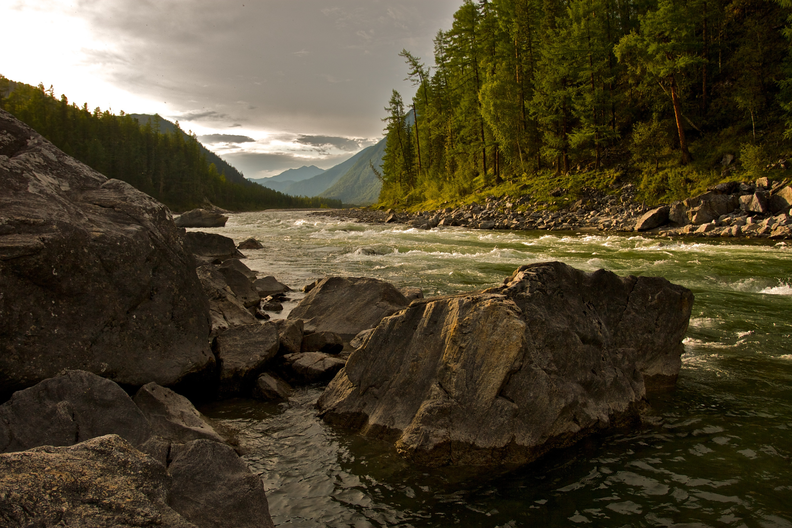

As the leading conservation organization, our work is around the clock and around the world. We protect ecologically important lands and waters for nature and people in all 50 United States, and in more than 30 countries. We can't achieve our large-scale conservation victories without the support and involvement of those who share our passion for preserving our last great places.
